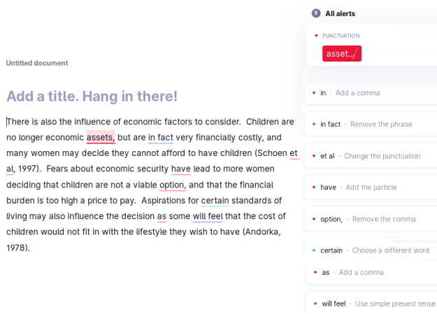

FormalWriter vs Grammarly
A direct comparison would show the big difference between these two applications. As you can see in the below table, not surprisingly, Grammarly could not catch any informal word in the text. Why? FormalWriter is developed for academic writing improvement and class use, Grammarly is a grammar checker for general purpose.
Original Paragraph Written by an English Native Speaker
(Source: BAWE corpus)
There is also the influence of economic factors to consider. Children are no longer economic assets, but are in fact very financially costly, and many women may decide they cannot afford to have children (Schoen et al, 1997). Fears about economic security have lead to more women deciding that children are not a viable option, and that the financial burden is too high a price to pay. Aspirations for certain standards of living may also influence the decision as some will feel that the cost of children would not fit in with the lifestyle they wish to have (Andorka, 1978).
FormalWriter
Check the suggestions for "decide" in 2 different sentences
There is also the influence of economic factors to consider . Children are no longer economic assets , but are in fact very financially costly , and many women may decide they can not afford to have children ( Schoen et al , 1997 ) . Fears about economic security have lead to more women deciding that children are not a viable option , and that the financial burden is too high a price to pay . Aspirations for certain standards of living may also influence the decision as some will feel that the cost of children would not fit in with the lifestyle they wish to have ( Andorka , 1978 ) .
Grammarly
Goals set: Formal, Technical, Respectful, Describe

(c) FormalWriter (Dariush Saberi).
The application is developed with a grant from City University of Hong Kong.
Privacy: Your text is safe with us. We do not publish or transfer your text to any third party
for any reason, unless compelled to do so by a court of law.